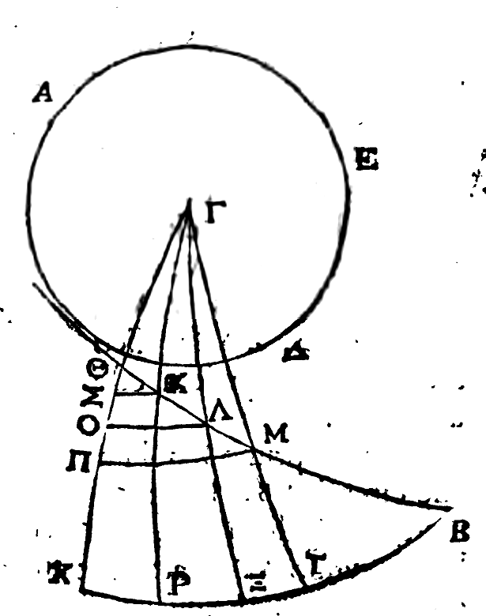

Proposition II.10 — Censura Theodosii & Theorema Universale (Latin)¶
Menelai Alexandrini Sphaericorum Lib. II Prop. X & Censura Theodosii (Halley 1758, pp. 75–76)


Censura Methodi Theodosianae (p. 75)¶
[§2.2 · Halley 1758, p. 75] His igitur praemonstratis, sequentia subjunximus ad verificanda ea quae habentur in libro Theodosii de Sphaera (ed. Hunt, 1707), cum eorundem conversis: sed modo magis universali & qui assensum extorqueat, tam ad stabilienda principia, quam ad demonstranda ea quae prius scripta sunt; quorum quidem nonnulla vix satis firma videntur.
Prop. X. (Halley 1758, pp. 75–76)¶
Enuntiatio (Halley 1758, p. 75)
Si fuerit in Sphaera circulus magnus quem tangit aliquis è circulis parallelis; & capiantur in eo duo arcus aequales inter punctum contactûs & maximum parallelorum; & describantur per terminos horum arcuum, tam circuli paralleli, quam circuli magni prodeuntes è polo: tum abscindent hi circuli paralleli ex iis qui de polo ducuntur arcus inaequales, quorum qui maximo parallelorum propior est major erit remotiore. Et praeterea portio illa maximi parallelorum circulis de polo ductis abscissa, quae propior est communi circuli obliqui & circuli parallelorum maximi intersectioni, minor erit remotiore ab eadem.
[§2.3 · Demonstratio, pp. 75–76] Sit ΘΜΒ circulus magnus Sphaerae, quem contingat aliquis circulorum parallelorum ΑΔΕ, sitque parallelorum maximus ΒΤΞΡΧ; & in ipso ΘΒ capiantur duo arcus aequales ΘΚ, ΛΜ; & per polum Γ perque puncta Θ, Κ, Λ, Μ ducantur arcus circulorum magnorum ΓΘΧ, ΓΚΡ, ΓΛΞ, ΓΜΤ; jungantur etiam circuli paralleli transeuntes per puncta Κ, Λ, Μ, nempe arcus ΚΣ, ΛΟ, ΜΠ: Dico quod arcus ΠΟ major est arcu ΣΘ, quodque arcus ΧΡ major est arcu ΞΤ.
Quoniam enim ΜΓΘ triangulum est Sphaericum, cujus crus ΜΓ majus est crure ΓΘ; ac utrumque minus est quadrante; & in ΘΜ sumuntur arcus aequales ΘΚ, ΛΜ; necessario consequitur, per ea quae demonstravimus in 33a I. & 7ma II. hujus, angulum ΘΓΚ majorem esse angulo ΛΓΜ, atque arcum ΧΡ majorem arcu ΞΤ; quodque arcus ΜΓ, ΓΘ simul sumpti superant ipsos ΛΓ, ΓΚ simul sumptos; unde manifestum est arcum ΠΟ majorem esse arcu ΣΘ. Q. E. D.
Nota Edm. Halleii (*p. 76*):
NB.Hanc propositionem Vtam & VIam & IXam Lib. III. Sphaericorum Theodosii complecti.